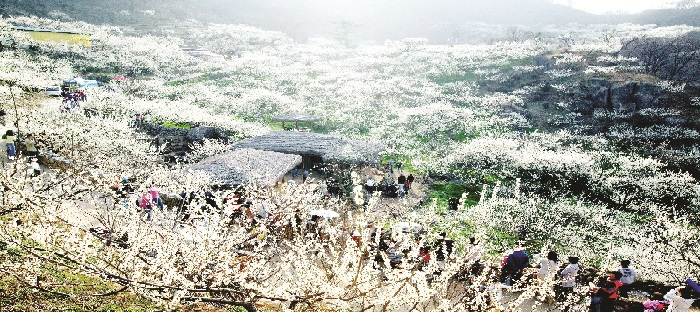
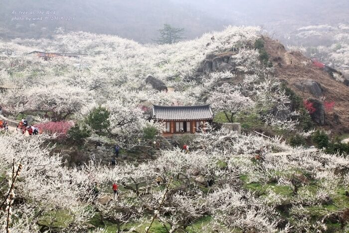
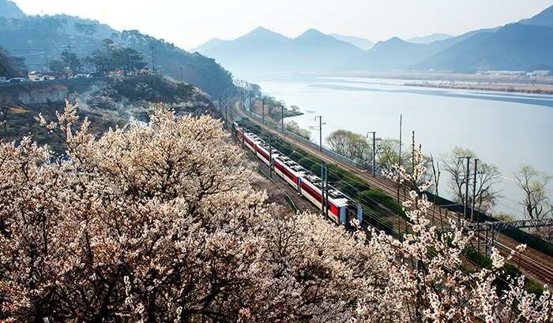
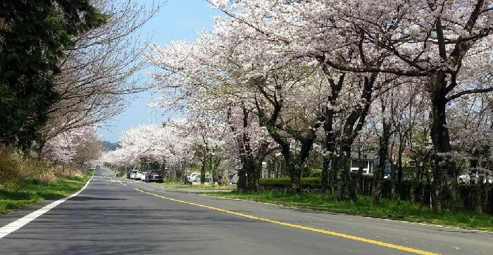

Du lịch Hàn Quốc
Welcome to Korea
Welcome to Korea
Lễ hội hoa mơ Hàn Quốc nổi tiếng không thể bỏ qua lễ hội ở Gwangyang, Jeonnam. Nơi đây được biết đến là nơi cung cấp những trái mơ nguyên chất và là nông trường trồng mơ lớn nhất xứ Hàn.
Lễ hội hoa mơ đầu tiên được tổ chức vào năm 2012. Từ đó đến nay, đây đã trở thành một trong những lễ hội không thể bỏ qua khi du lịch Hàn Quốc mùa xuân. Lễ hội diễn ra dưới chân núi Jjotbi bên dòng sông thơ mộng Seomjin. Những cây hoa mơ như khoác lên mình bộ cánh yêu kiều, quyến rũ. Dạo bộ dưới những con đường hoa, tận hưởng không khí mùa xuân nhẹ nhàng, mọi muộn phiền như tan biến. Điểm thu hút khác của lễ hội chính là những hoạt động trình diễn nghệ thuật. Nhạc hội K-pop, những ca sĩ quốc tế đem lại màn trình diễn sôi động.
Cách di chuyển: Để đến lễ hội hoa mơ Gwangyang , bạn sẽ phải bắt xe từ bến xe bus liên tỉnh Hadong. Tại đây bạn đón xe bus địa phương số 35 hoặc 35-1 đi 5 bến và xuống ở bến xe làng hoa mơ. Từ bến xe bus đi bộ ngược lại 220m là tới nông trường hoa mơ. Từ Seoul: di chuyển đến bến xe bus tốc hành Seoul Express Bus Terminal. Đón xe bus đến bến xe bus liên tỉnh Hadong. Lộ trình tiếp theo giống như hướng dẫn bên trên. Từ Busan: đến bến xe bus liên tỉnh Busan Central Bus Terminal. Bắt xe đến bến xe bus liên tỉnh Hadong rồi đi theo hướng dẫn đầu tiên.
Lễ hội hoa mơ Hàn Quốc ở Wondong, Gyeongnam bắt đầu vào mùa xuân. Bên cạnh bờ sông Nakdongkang, những cây hoa mơ đua nhau khoe sắc, mê hoặc vô cùng. Cảnh sắc thiên nhiên khiến người lữ hành dừng chân ghé lại chẳng muốn rời đi. Cùng lễ hội hoa truyền thống, du khách còn được tham gia các chương trình biểu diễn độc đáo. Những bài biểu diễn âm nhạc truyền thống, các vở kịch câm… Đặc biệt trong tour du lịch Hàn Quốc đến lễ hội hoa mơ Wondong, bạn có cơ hội thưởng thức ẩm thực địa phương đặc sắc. Cốc nước ép mơ, rau cần, những quả dâu tươi mọng cùng các loại nấm thơm ngon trong triển lãm ẩm thực khiến bạn càng thêm hứng thú.
Cách di chuyển: Để đến Wondong, từ bến xe bus liên tỉnh Yangsan. Đi bộ khoảng 5 phút đến bến xe bus của Trung tâm Y tế cộng đồng. Sau đó đón xe bus số 138 đi 40 bến rồi xuống ở bến Trường tiểu học Wondong. Tiếp đó bạn sang đường đi bộ 3 phút ngược lại ga Wondong. Đón tiếp xe bus số 2 hoặc 3 đi 3 bến và xuống ở bến Yeongpo. Tiếp tục đi bộ khoảng 715m là tới nơi.
Lễ hội hoa mơ ở công viên Hueree, Jeju cũng được xem là một trong những lễ hội hoa mơ Hàn Quốc thú vị. Trong quần thể công viên rộng lớn với khu nông trại và trang trại, du khách sẽ được trải nghiệm sinh hoạt tự nhiên độc đáo. Bên cạnh những loại hoa cỏ và động vật, mùa xuân đến là lúc lễ hội hoa mơ diễn ra. Hòa chung trong khung cảnh yên bình của công, lễ hội mang đến cho khách du lịch trải nghiệm thư giãn, sảng khoái.
Cách di chuyển: Từ sân bay quốc tế Jeju, tại cửa ra số 2, bạn đón xe bus số 181 đi 11 bến thì xuống. Sau đó bạn tiếp tục đi bộ 223m đến bến tiếp theo và đón xe bus số 621, 622, 623 hoặc 627 đi 6 bến. Tại đây bạn đi bộ khoảng 2,4km là đến công viên Hueree. Lễ hội hoa mơ Hàn Quốc mang đến cho người lữ hành trải nghiệm mới lạ. Tạm xa rời huyên náo, ồn ào nơi thành phố, hòa mình vào không khí trong lành cùng hương thơm dịu nhẹ của những đóa mơ trắng xóa yêu kiều, mọi thứ thật yên bình, thanh thản. Chắc chắn rằng đây sẽ là lựa chọn lý tưởng để ghi lại khoảnh khắc đáng nhớ trong chuyến hành trình đến xứ Hàn của bạn.
GỢI Ý TOUR DU LỊCH HÀN QUỐC |
|---|
>> Hà Nội – Hàn Quốc: Seoul – Nami – Everland 5N Bay T’way Air
|
Top 20 điểm tham quan nhất định phải ghé thăm trong hành trình chinh phục Seoul

Điện thoại: 0903357616
Email: thaontps24690@fpt.edu.vn